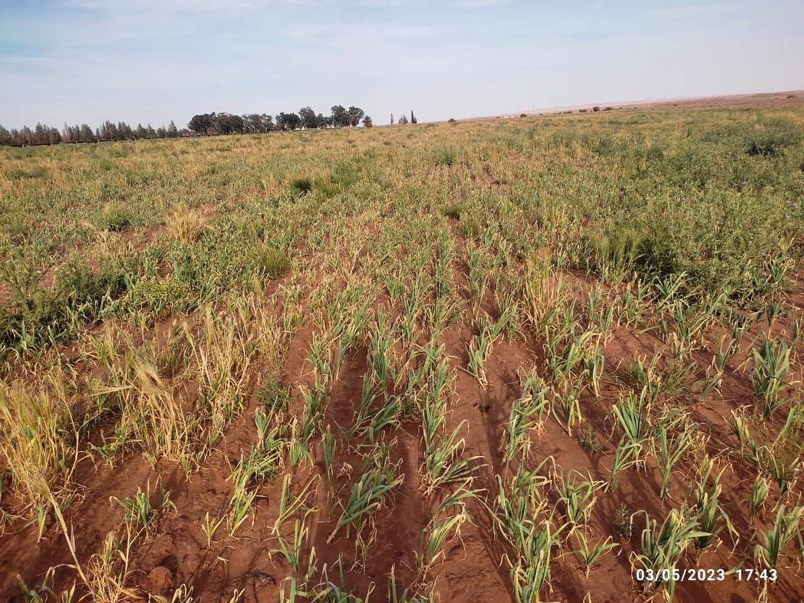
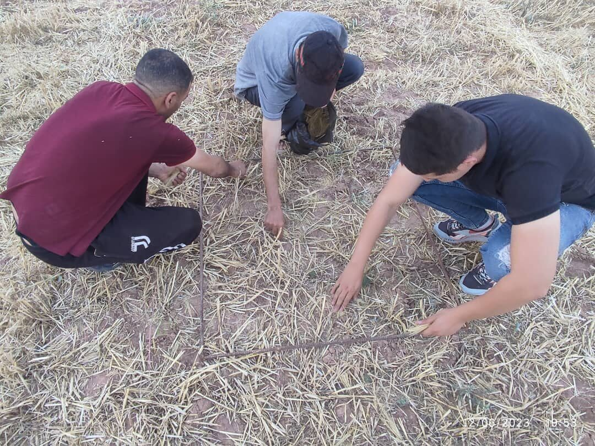
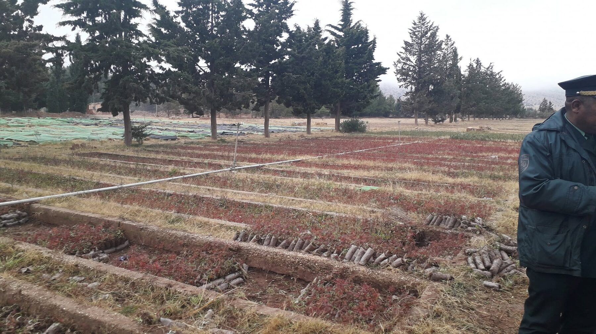
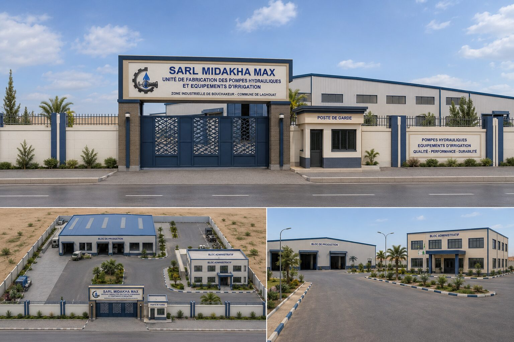
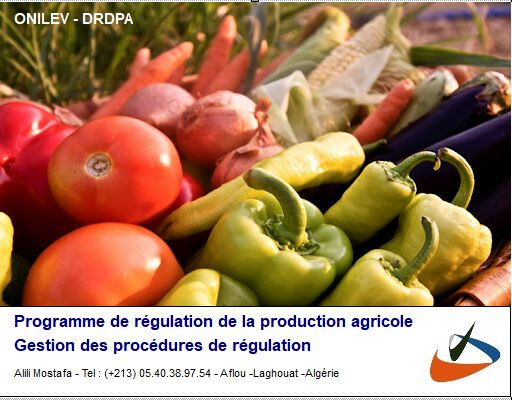
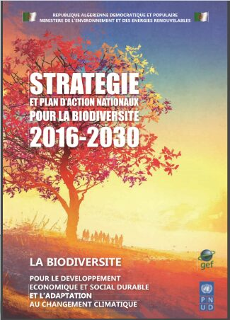
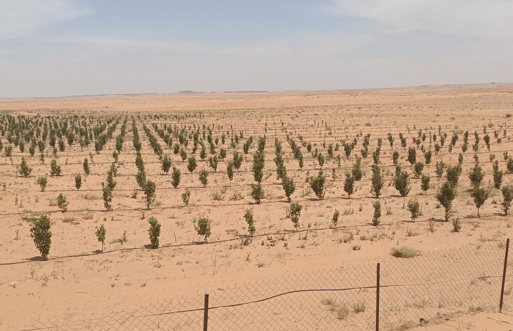
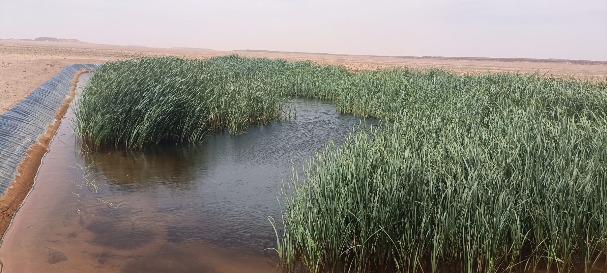

Depuis sa création, notre cabinet accompagne des entreprises, investisseurs, exploitations agricoles, institutions et porteurs de projets dans la conception, l'analyse et la mise en œuvre de projets en Algérie — plus de 300 études, rapports et missions réalisés dans l'agriculture, le développement rural, l'investissement, l'environnement et le conseil stratégique.








Diagnostic stratégique réalisé pour une grande exploitation agricole dans la wilaya d'El Bayadh, portant sur l'analyse des systèmes de production, l'irrigation et le potentiel de développement du site.


Une expertise construite sur le terrain, au service d'institutions publiques, d'entreprises, d'investisseurs privés et de porteurs de projets.
Études d'aménagement des systèmes oasiens : diagnostic stratégique des territoires, analyse des enjeux et propositions d'aménagement, pour le compte du Ministère de l'Intérieur.
Mission d'expertise et de relevés de terrain sur les dégâts constatés sur céréales et fourrages, pour le compte de COSIDER.
Mission de contrôle qualité des plants dans le cadre du Plan National de Reboisement, pour le compte de la Conservation des Forêts de Laghouat.
Suivi et accompagnement des travaux de reboisement réalisés dans le cadre du Plan National de Reboisement, pour le compte de la Conservation des Forêts de Laghouat.
Élaboration d'une dizaine d'études, rapports et business plans destinés à des investisseurs privés dans le cadre du programme d'accès au foncier agricole via la plateforme ODAS.
Conception d'une procédure administrative intégrant une solution de gestion informatisée des déclarations de culture, pour la DRDPA — Ministère de l'Agriculture.
Réalisation de l'inventaire des forages et des puits à travers les communes de la wilaya, pour le compte de l'Agence de Gestion Intégrée des Ressources en Eau (AGIRE).
Collaboration avec le journal spécialisé Filaha Agro News : investissement agricole, foncier, développement rural, politiques et programmes agricoles.
Études techniques et suivi pour la mobilisation et l'aménagement des ressources en eau : mares d'eau, djoubs et captages de sources, pour le HCDS de Djelfa, la Conservation des Forêts de Laghouat et l'EAGR.
Plus de 200 rapports et études relatifs à des programmes d'investissement agricole, dans les wilayas de Laghouat, El Bayadh, Naâma, Ghardaïa, Ouargla, El Oued, Tlemcen, Tamanrasset, Biskra et d'autres régions.
Réalisé pour l'Observatoire National de l'Environnement et du Développement Durable (ONEDD), dans le cadre de la révision de la Stratégie Nationale de la Biodiversité.
Étude de faisabilité pour 368 hectares de périmètres irrigués à Naâma ; quatre études de mise en valeur pour le BNEDER à Djelfa ; quinze études technico-économiques pour des investisseurs privés.
Études techniques et suivi : installation éolienne, alimentation solaire de forages et équipement de sept forages, pour l'Entreprise Algérienne de Génie Rural (EAGR).
Plus de 70 études technico-économiques bancables dans le cadre de programmes de création de nouvelles exploitations agricoles et d'élevage.
Nos interventions ont concerné différents territoires et régions d'Algérie, ce qui nous permet d'intégrer les spécificités locales dans l'analyse des projets et la recherche d'opportunités.
Chaque mission constitue une expérience et chaque projet représente une nouvelle opportunité de créer de la valeur.
Discuter de votre projet